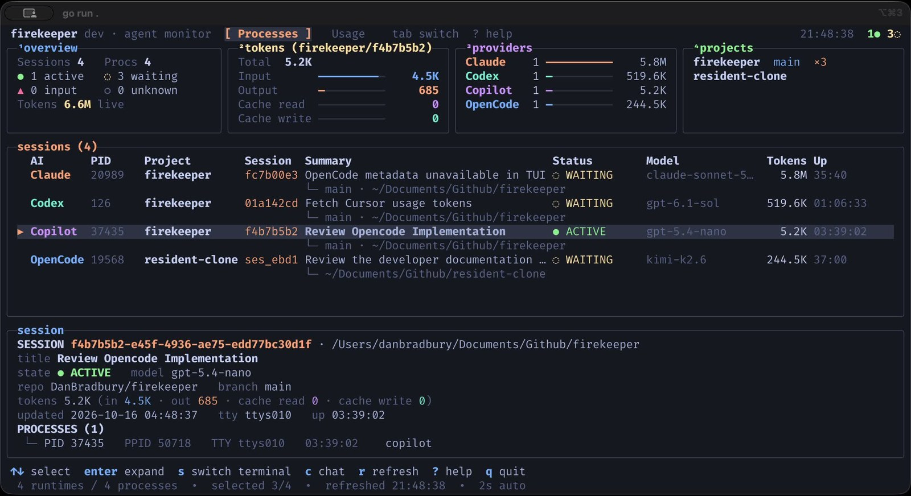

See which agents are working or need attention, read their replies, and check token usage without hunting through tabs. Keep launching your agents as usual; run firekeeper beside them.
Free and open source. Works with Claude Code, Codex, GitHub Copilot CLI, Kimi Code, OpenCode, Gemini CLI, and Cursor CLI. No account, server, or wrappers, and the dashboard uploads no session data. Usage and update checks can contact the network.

One agent or several, across projects and terminal tabs: see their latest observable state, inspect a reply, and return to the right terminal to keep working.
A keyboard-driven terminal UI finds your agent processes, groups each with its children, and shows state, model, working directory, Git branch, and tokens.
Press s to focus the terminal holding a session. Supports Ghostty, Terminal.app, and iTerm2 on macOS. On Windows it raises the terminal window; you pick the tab.
Select a session and press c to read its available prompts and replies, following new messages live. Press Esc to return. Reply and approve tool calls in the agent's own terminal.
Compare local token history by model for Codex, Copilot CLI, Kimi Code, and Claude Code. See provider limits where available, separately from local totals. Understand the data sources.
Optional. backfill and the daemon read your agents' local history, redact it, and upload it to a dashboard server over an open API. You choose the providers.
Choose one method for your system. Prebuilt binaries need no Go toolchain. Then start your agents as usual and open Firekeeper in another terminal.
brew install DanBradbury/tap/firekeeper
For macOS with Homebrew already installed. No Homebrew? Use the macOS / Linux script tab. Upgrade later with brew upgrade firekeeper.
curl -fsSL https://raw.githubusercontent.com/DanBradbury/firekeeper/main/install.sh | sh
Installs to ~/.local/bin without sudo and checks the binary against the release's SHA-256 checksums. Follow the installer's PATH hint before running firekeeper. Command not found?
irm https://raw.githubusercontent.com/DanBradbury/firekeeper/main/install.ps1 | iex
Run in Windows PowerShell 5.1 or PowerShell 7. Installs firekeeper.exe to %LOCALAPPDATA%\Programs\firekeeper (override with FIREKEEPER_INSTALL_DIR), adds it to your user PATH, needs no administrator rights, and verifies the download against the release's SHA-256 checksums. Pin a release by running $env:FIREKEEPER_VERSION = 'vX.Y.Z' first. The binaries are not code-signed.
The one-liner runs the script on main, and its checksum check uses checksums.txt from the same release, which proves integrity, not authenticity. To read what you run first, pin the script to a release tag:
$v = 'v0.8.0' Invoke-WebRequest "https://raw.githubusercontent.com/DanBradbury/firekeeper/$v/install.ps1" -OutFile install.ps1 -UseBasicParsing notepad .\install.ps1 powershell -NoProfile -ExecutionPolicy Bypass -File .\install.ps1 -Version $v
-ExecutionPolicy Bypass applies to that one process; never Set-ExecutionPolicy Unrestricted. Or download firekeeper_0.8.0_windows_amd64.zip (or _arm64) and checksums.txt from the release and compare (Get-FileHash -Algorithm SHA256 .\firekeeper_0.8.0_windows_amd64.zip).Hash with its line before unzipping. Full steps.
Windows is supported with limits and has had the least real-world use: s raises the terminal window but not the tab, and Codex runtimes are matched to threads by directory and time. See what differs on Windows.
go install github.com/DanBradbury/firekeeper@latest
Requires Go 1.26 or newer. Add your Go bin directory (GOBIN, or $(go env GOPATH)/bin by default) to PATH. Builds from source report their version as dev and never check for updates.
The script commands download and execute code. Prefer to inspect the scripts or download a release yourself? See verification, version pinning, and manual installation. Read the installation steps without tabs.
macOS (Apple Silicon and Intel) is the main target. Windows 10 1809+ and 11 (amd64 and arm64) are supported with limitations. Linux (amd64 and arm64) is best effort.
Once installed, there is nothing to configure for the local dashboard. No login, server, or daemon needed.
Open your project and launch any supported agent with its normal command and sign-in. Already have agents running? Leave them running. Firekeeper does not install or launch them.
In another terminal window, tab, or pane on the same machine, run this from any directory:
firekeeper
The Processes view should show your agents within a couple of seconds, along with the project, state, model, and token data it can read.
Use Up/Down to select, c to open the conversation, and Esc to return. Press s to switch terminals on macOS or Windows; reply in the agent itself. Quitting Firekeeper leaves your agents running.
Nothing showing up? Check missing sessions. On Windows, switching raises the terminal window, not the tab; on Linux, use your terminal's controls. See the everyday workflow guide for more.
The terminal dashboard is a complete, free tool on its own. Sending transcripts to a web dashboard is a separate opt-in workflow, not another setup step.
firekeeper
Watch running sessions, read their chat, check usage, and jump to their terminal.
Preview local history with firekeeper backfill --all --dry-run; it uploads nothing. Then follow the reporting guide to link a server and choose which providers to upload.
Process discovery works without any integration. Each provider also has an adapter that reads its local session data, read-only.
| Provider | Process discovery | State & metadata | Usage tab | Optional transcript upload |
|---|---|---|---|---|
| Codex | Yes | Yes | Limits and history | Yes |
| GitHub Copilot CLI | Yes | Yes | Local history and plan details | Yes |
| Claude Code | Yes | Yes | Limits and token history | Yes |
| Kimi Code | Yes | Metadata | Token history | Yes |
| OpenCode | Yes | Yes | No | Yes |
| Gemini CLI | Yes | Yes, no NEEDS INPUT | No | Yes |
| Cursor CLI | Yes | Yes, no NEEDS INPUT | No | Yes, no timestamps or tokens |
States describe the latest event Firekeeper can see, not ground truth. Provider data formats can change between CLI releases, and adapters evolve with them. macOS is the main target; Linux is best effort; Windows is supported with limits and has had the least real-world use.
The terminal dashboard is free and open source, with no subscription. The separate commercial web dashboard is free for local use on your own machine. For remote or shared use, see the server licenses below.
Prices are in US dollars and exclude tax. Payment is handled by Stripe. After you buy, your license key is emailed to you within one business day. Full refund within 14 days: see the refund policy and the license terms.
The terminal dashboard reads provider data locally and uploads no conversations. Provider usage lookups and release checks can contact the network. Transcript reporting is separate and opt-in.
An unconfigured report or daemon sends nothing. You name each provider you allow.
Every event passes through redaction before it leaves the machine.
A repository containing .firekeeper-ignore, or an excluded directory, is never read.
Firekeeper never changes your agents' databases, logs, or launch commands.
Uploads go only to the server you name, over HTTPS unless it is on this machine, with a token bound to this machine.
Plain firekeeper opens the dashboard. Everything else is an explicit subcommand.
firekeeperTerminal dashboard: Processes, Overview, and Usagefirekeeper login --server URLLink this machine with a browser approvalfirekeeper reportUpload the sessions running right nowfirekeeper backfill --allImport past sessions from local historyfirekeeper daemon installReport in the background from loginfirekeeper whoamiServer, account, and machine this one reports asfirekeeper logoutRevoke and remove this machine's tokenfirekeeper snapshot --jsonPrint discovered sessions as JSONfirekeeper config showMerged configuration, token masked